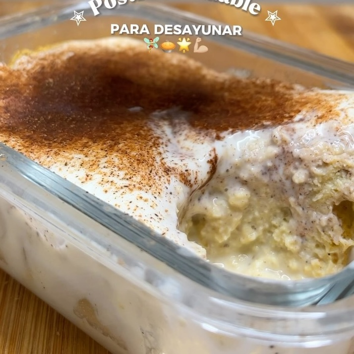

Pastel de Canela y Leche
Ingredientes:
- 100 gr yogurt griego
- 2 huevos
- 4 cdas de avena instantánea (30gr)
- 1 cdita polvo hornear
- 1/2 cdita canela en polvo
- stevia a gusto y una pizca de sal
- 20 ml de leche para humedecer el cake
- 20gr de yogurt griego
- canela en polvo
Instrucciones:
- Mezclar 100 gr de yogurt, huevos, avena, polvo para hornear, canela y stevia
- Llevar mezcla al microondas por 5 mins
- Hacer unos hoyos con el tenedor
- Juntar la leche, 20 gr de yogur griego y la canela, para hacer una leche para vertir en el pastel